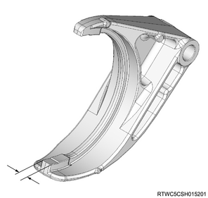
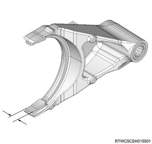
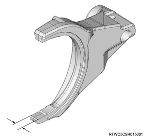
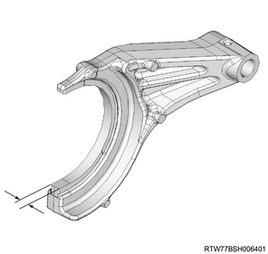
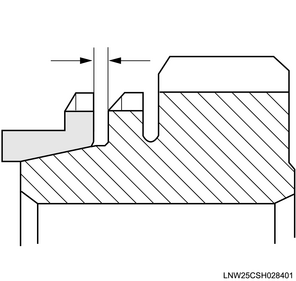
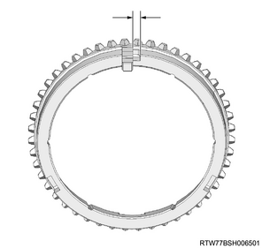
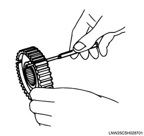
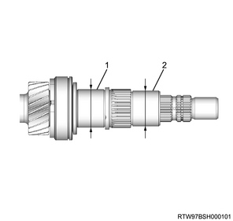
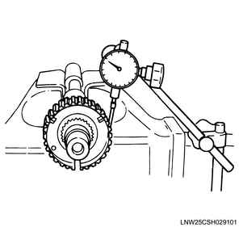

Transmission inspection (MUX)
1. 1st - 2nd shift arm inspection
1. Inspect the 1st - 2nd shift arm.
Note
- Replace parts as needed if excessive worn or damage is discovered during inspection.
2. Measure the 1st - 2nd shift arm using the micrometer.
Note
- Measure the thickness of the tip of the shift arm.
- Replace the 1st - 2nd shift arm if the measured value exceeds the limit.
Standard： 9.60 to 9.85 mm { 0.378 to 0.388 in }
Limit： 8.85 mm { 0.348 in }

2. 3rd - 4th shift arm inspection
1. Inspect the 3rd - 4th shift arm.
Note
- Replace parts as needed if excessive worn or damage is discovered during inspection.
2. Measure the 3rd - 4th shift arm using the micrometer.
Note
- Measure the thickness of the tip of the shift arm.
- Replace the 3rd - 4th shift arm if the measured value exceeds the limit.
Standard： 9.60 to 9.85 mm { 0.378 to 0.388 in }
Limit： 8.85 mm { 0.348 in }

3. 5th shift arm inspection
1. Inspect the 5th shift arm.
Note
- Replace parts as needed if excessive worn or damage is discovered during inspection.
2. Measure the 5th shift arm using the micrometer.
Note
- Measure the thickness of the tip of the shift arm.
- Replace the 5th shift arm if the measured value exceeds the limit.
Standard： 9.60 to 9.85 mm { 0.378 to 0.388 in }
Limit： 9.35 mm { 0.368 in }

4. Reverse shift arm inspection
1. Inspect the reverse shift arm.
Note
- Replace parts as needed if excessive worn or damage is discovered during inspection.
2. Measure the reverse shift arm using the micrometer.
Note
- Measure the thickness of the tip of the shift arm.
- Replace the reverse shift arm if the measured value exceeds the limit.
Standard： 7.85 to 8.10 mm { 0.309 to 0.319 in }
Limit： 7.60 mm { 0.299 in }

5. 3rd - 4th block ring inspection
1. Inspect the 3rd - 4th block ring.
Note
- Replace parts as needed if excessive worn or damage is discovered during inspection.
2. Measure the 3rd - 4th block ring using a feeler gauge.
Note
- Measure the gap between the block ring and the dog gear.
- Replace the 3rd - 4th block ring if the measured value exceeds the limit.
Standard： 1.50 mm { 0.059 in }
Limit： 0.8 mm { 0.031 in }

6. 5th block ring inspection
1. Inspect the 5th block ring.
Note
- Replace parts as needed if excessive worn or damage is discovered during inspection.
2. Measure the 5th block ring using a feeler gauge.
Note
- Measure the gap between the block ring and the dog gear.
- Replace the 5th block ring if the measured value exceeds the limit.
Standard： 1.50 mm { 0.059 in }
Limit： 0.8 mm { 0.031 in }
7. Insert inspection
1. Inspect the insert.
Note
- Replace parts as needed if excessive worn or damage is discovered during inspection.
2. Measure the insert using a vernier caliper.
Note
- Measure the gap between the insert key and block ring groove.
- Replace the insert key and block ring if the measured value exceeds the limit.

Standard： 3.59 to 3.91 mm { 0.141 to 0.154 in }
Limit： 4.10 mm { 0.161 in }
3. Measure the insert key using a feeler gauge.
Note
- Measure the gap between the insert key and clutch hub.
- Replace the insert key and the clutch hub if the measured value exceeds the limit.
Standard： 0.09 to 0.31 mm { 0.004 to 0.012 in }
Limit： 0.40 mm { 0.016 in }

8. 3rd gear inspection
1. Inspect the 3rd gear.
Note
- Replace parts as needed if excessive worn or damage is discovered during inspection.
2. Measure the 3rd gear using a dial gauge.
Note
- Measure the inner diameter of the 3rd gear using an inside dial gauge.
- Replace the 3rd gear if the measured value exceeds the limit.
Standard： 45.000 to 45.016 mm { 1.7717 to 1.7723 in }
Limit： 45.016 mm { 1.7723 in }

9. 5th gear inspection
1. Inspect the 5th gear.
Note
- Replace parts as needed if excessive worn or damage is discovered during inspection.
2. Measure the 5th gear using a dial gauge.
Note
- Measure the inner diameter of the gear using an inside dial gauge.
- Replace the 5th gear if the measured value exceeds the limit.
Standard： 48.000 to 48.016 mm { 1.8898 to 1.8904 in }
Limit： 48.016 mm { 1.8904 in }
10. Input shaft inspection
1. Inspect the input shaft.
Note
- Replace parts as needed if excessive worn or damage is discovered during inspection.
2. Measure the input shaft using the micrometer.
Note
- Measure the outer diameter of the collar at the 3rd and 5th gear installation position.
- Replace the collar if the measured value exceeds the limit.
| Input shaft collar outer diameter | ||
| 3rd | Standard value | ： 39.980 to 39.991 mm { 1.5740 to 1.5744 in } |
| Limit | ： 39.980 mm { 1.5740 in } | |
| 5th | Standard value | ： 42.958 to 42.969 mm { 1.6913 to 1.6917 in } |
| Limit | ： 42.958 mm { 1.6913 in } | |

- 5th gear installation position
- 3rd gear installation position
11. 3rd - 4th clutch hub inspection
1. Inspect the 3rd - 4th clutch hub.
Note
- Replace parts as needed if excessive worn or damage is discovered during inspection.
- Set the dial indicator to the 3rd - 4th clutch hub.
- Move the clutch hub left to right as far as possible.
- Record the reading numerical value from the dial indicator.
- Replace the 3rd - 4th clutch hub if the measured value exceeds the limit.
Standard： 0.010 to 0.102 mm { 0.0004 to 0.0040 in }
Limit： 0.15 mm { 0.0059 in }

12. 5th synchronizer assembly inspection
1. Inspect the 5th synchronizer assembly.
Note
- Replace parts as needed if excessive worn or damage is discovered during inspection.
- Set the dial indicator to the 5th clutch hub.
- Move the clutch hub left to right as far as possible.
- Record the reading numerical value from the dial indicator.
- Replace the 5th clutch hub if the measured value exceeds the limit.
Standard： 0.009 to 0.104 mm { 0.0004 to 0.0041 in }
Limit： 0.15 mm { 0.0059 in }